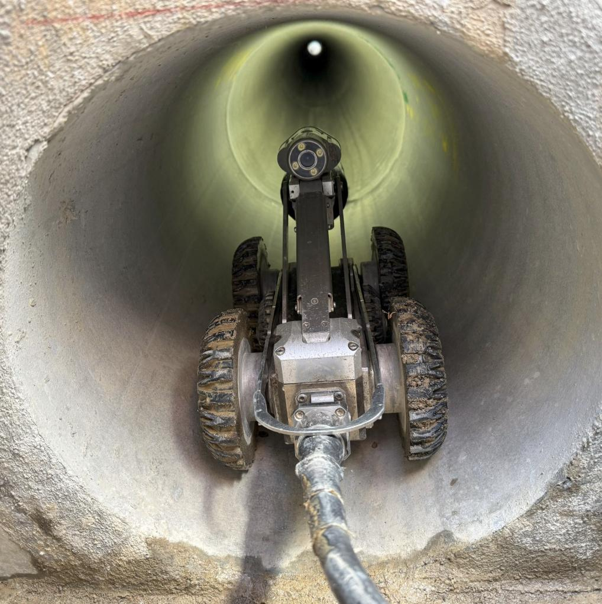

排水管道检测机器人
在相邻检查井之间远程巡检。操作员通过系缆控制机器人在管内行走和拍摄，并按井段与里程查阅视频。
- 个人职责
- 联调本体侧行走、升降、云台拍摄与补光
- 系统验证
- 已用于正式排水管道检测

项目整体架构图
井下巡检
地面操作端控制井段巡检和停驻拍摄
巡检指令
地面工控机编排行走、升降、视角与补光动作
系缆控制
系缆巡检机器人执行底盘、升降与云台动作并采集影像
影像回查
现场采集工业相机、IMU、轮编码器及放缆计米
视频与状态数据
工控机索引及缺陷筛查按时间戳关联记录，运行视觉模型
井段索引、候选结果
操作端复核按井段和估计里程回看影像及关键帧
ROS2 节点通信关系图
节点按职责命名。指令下发和采集归档分别对应控制链路与数据链路。
动作调度
巡检任务节点组织沿程录像和停驻拍摄
巡检动作指令
设备接口模块将任务指令转为本体与绕线器控制量
系缆控制信号
现场设备执行底盘、升降、云台及补光动作
采集对齐
影像与状态采集模块收集视频帧、IMU、轮编码器及计米数据
时间戳与观测
时间戳关联与索引按井段和估计里程定位原始记录
影像索引
缺陷筛查与回看关联候选缺陷和对应视频位置
软件模块设计
- 巡检任务编排
- 按相邻检查井之间的管段组织行走、沿程录像与停驻拍摄。
- 机器人本体控制
- 接收系缆指令，联调底盘、升降与云台，并配合补光。
- 进尺与影像索引
- 关联视频、惯性、轮编码器和计米数据，支持按井段与估计里程检索。
- 视觉缺陷筛查
- 通过 ONNX Runtime 提取候选缺陷，生成包含里程区间和关键帧的复核条目。
硬件通信接口设计
| 设备或端点 | 通信接口 | 信号或数据 |
|---|---|---|
| 底盘、升降、云台与绕线器 | 系缆 / RS-485、Modbus RTU | 设备动作指令、收放线控制和计米数据 |
| 工业相机与工控机 | 视频采集链路 | 巡检视频帧 |
| 补光设备 | 远程 I/O | 补光控制 |
| 升降限位与驱动器 | 驱动器本地输入 | 升降限位信号 |
关键功能与技术说明
- 里程与影像关联
- 用时间戳对齐视频帧、轮编码器和放缆计米记录，在可识别的检查井或接缝处校正里程，便于回查具体位置。
- 筛查结果去重与复核
- 对相邻帧中落在同一估计里程区间的重复发现进行合并。每条记录保留关键帧和置信度，供操作员复核。
现场数据与缺陷复核
系统的缺陷筛查功能通过 ONNX Runtime 运行模型，标出裂缝、沉积物和接缝错口等候选项。该功能曾使用现场采集的数据运行，结果供操作员复核。